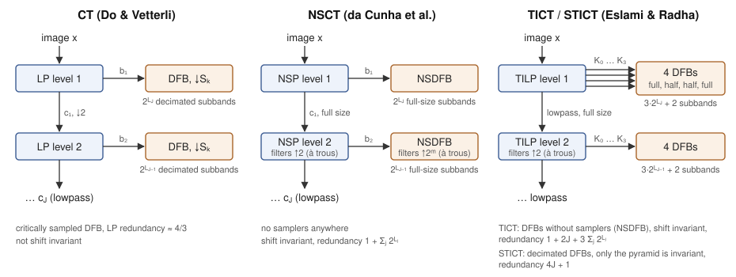
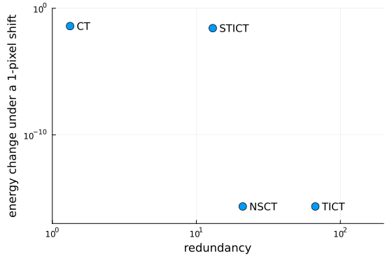
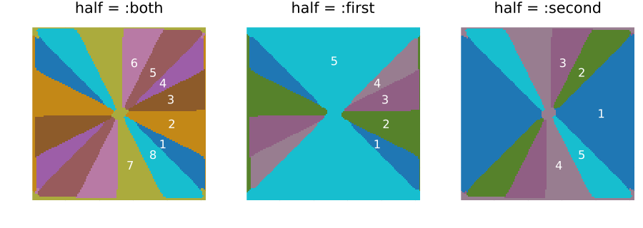
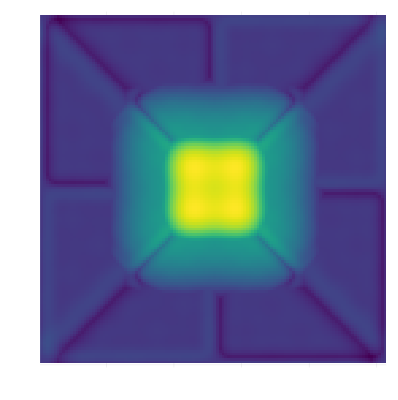
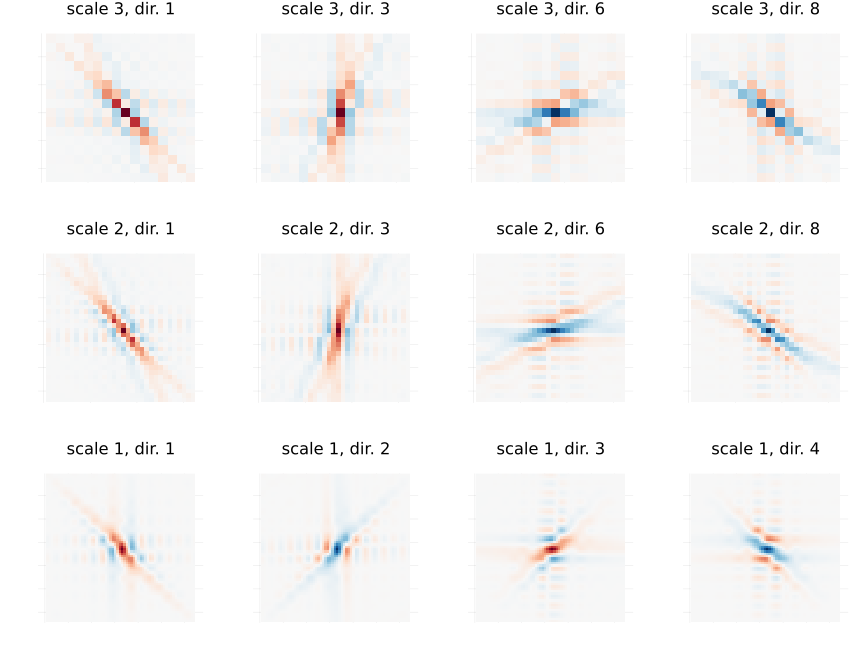
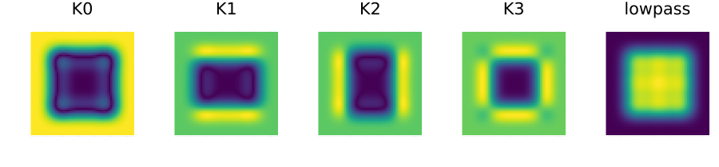

Theory
This page explains how the four transforms of Contourlets.jl are built and how they differ. Signatures, keywords and size rules are in the API Reference.
A contourlet transform splits an image by scale, like a wavelet transform, and then splits each scale by orientation. Each output array, a subband, holds the image content of one scale and one range of orientations. The redundancy of a transform is its number of coefficients divided by the number of pixels.
Structure
All four transforms have two stages. A pyramid splits the image into a bandpass image and a coarser lowpass image, and splits the lowpass image again at the next scale. A directional filter bank splits each bandpass image into $2^L$ orientations, where $L$ is the depth chosen for that scale (the direction_levels keyword). The transforms differ in which stages downsample:

| CT | NSCT | TICT | STICT | |
|---|---|---|---|---|
| Pyramid | Laplacian (↓2) | nonsubsampled | translation-invariant Laplacian, 4 channels | translation-invariant Laplacian, 4 channels |
| Directional stage | DFB (downsampled) | NSDFB | NSDFB | DFB (downsampled) |
| Commutes with circular shifts | no | yes | yes | pyramid only |
| Redundancy | $\approx 4/3$ | $1 + \sum_j 2^{L_j}$ | $1 + 2J + 3\sum_j 2^{L_j}$ | $1 + 4J$ |
Here $J$ is the number of scales (scales) and $L_j$ the directional depth of scale $j$. The TICT formula holds when every $L_j \ge 1$.
A transform commutes with circular shifts when shifting the image circularly shifts every subband by the same amount. The energy of each subband then does not depend on where a feature sits in the image, which helps denoising. The price is redundancy. The figure shows both for a random 128 × 128 image and scales = 3, direction_levels = [2, 3, 3]. The vertical axis is the relative change of the subband energies when the image is shifted by one pixel along both axes:
using Contourlets, Plots, Random, LinearAlgebra
Plots.default(show = false)
x = randn(Xoshiro(1), 128, 128)
energies(t, c) = [sum(abs2, subband(t, c, i)) for i in 1:nsubbands(t, size(x))]
points = map((CT, STICT, NSCT, TICT)) do T
t = T(scales = 3, direction_levels = [2, 3, 3])
c = analyze(t, x)
e = energies(t, c)
e_shifted = energies(t, analyze(t, circshift(x, (1, 1))))
(name = string(nameof(T)), redundancy = length(c) / length(x),
change = max(norm(e_shifted - e) / norm(e), eps()))
end
for p in points
println(rpad(p.name, 6), " redundancy ", rpad(round(p.redundancy; digits = 2), 6),
" energy change ", round(p.change; sigdigits = 2))
end
scatter([p.redundancy for p in points], [p.change for p in points];
xscale = :log10, yscale = :log10, legend = false, markersize = 6,
series_annotations = [text(" " * p.name, 10, :left) for p in points],
xlabel = "redundancy", ylabel = "energy change under a 1-pixel shift",
xlims = (1, 200), ylims = (1e-17, 1), size = (560, 380))CT redundancy 1.33 energy change 0.039
STICT redundancy 13.0 energy change 0.027
NSCT redundancy 21.0 energy change 2.2e-16
TICT redundancy 67.0 energy change 2.2e-16
For the NSCT and the TICT the change is rounding error.
Laplacian pyramid
The Laplacian pyramid (Burt & Adelson 1983) of the CT computes, at each scale,
coarse = ↓2 (h ⊛ image)
bandpass = image − g ⊛ (↑2 coarse)where h and g are the analysis and synthesis lowpass filters, ⊛ is convolution, ↓2 keeps every second sample along both axes and ↑2 inserts zeros between samples. Synthesis adds the prediction back, image = bandpass + g ⊛ (↑2 coarse), which is exact for any filters. The pyramid extends the image symmetrically at its borders. The default filters CDF97 are the CDF 9/7 biorthogonal wavelet filters (Cohen, Daubechies & Feauveau 1992). The filter pairs and the pyramid come from MultiscaleFilterBanks.jl, whose theory page explains them in more detail.
Directional filter bank
The directional filter bank (DFB) of Bamberger & Smith (1992) splits the frequency plane into $2^L$ wedges with a binary tree of two-channel quincunx filter banks. Contourlets.jl follows the formulation in Do's thesis (2001, §3.3): each of the $2^L$ channels is one filtering with an equivalent filter $h_k$, the combination of the filters on the channel's path through the tree, followed by downsampling by a diagonal matrix $S_k = \mathrm{diag}(2^{L-1}, 2)$ (or its transpose):
\[y_k[n] = (h_k \circledast x)[S_k n].\]
For $L \ge 2$ the first $2^{L-1}$ subbands have size $n_1/2^{L-1} \times n_2/2$ and the rest $n_1/2 \times n_2/2^{L-1}$. The package evaluates the equivalent filters on the DFT grid, so the DFB treats the bandpass image as periodic, and each subband commutes with the shifts that lie on its own sampling lattice.
The two-channel filters are the quincunx filters of Phoong et al. (1995), built from a one-dimensional ladder filter; perfect reconstruction holds for any ladder filter. The default Q2345 uses their 12-tap "23-45" design.
The nonsubsampled DFB (NSDFB) applies the same equivalent filters without downsampling, so every subband keeps the size of its input and its impulse responses show the frequency partition directly. Below, each frequency is colored by the subband with the largest response, for depth $L = 3$, with $\omega = 0$ at the center, horizontal frequency left to right and vertical frequency bottom to top. The TICT and STICT also use half trees (half = :first and half = :second), which split only one of the two first-level fans and keep the other whole:
using Contourlets: nsdfb_decompose
using FFTW
N = 128
δ = zeros(N, N); δ[1, 1] = 1.0
mid = N ÷ 2 + 1
# The subband with the largest frequency response at each frequency.
function wedge_owner(l, half)
resp = [fftshift(abs.(fft(s))) for s in nsdfb_decompose(δ, Q2345, l; half)]
return [argmax([r[i, j] for r in resp]) for i in 1:N, j in 1:N]
end
# One label per wedge, at the mean orientation of its frequencies.
function wedge_labels(owner)
return map(1:maximum(owner)) do k
z = sum(cis(2 * atan(I[1] - mid, I[2] - mid))
for I in findall(==(k), owner) if I != CartesianIndex(mid, mid))
θ = angle(z) / 2
(mid + 0.6 * mid * cos(θ), mid + 0.6 * mid * sin(θ), text(string(k), 11, :white))
end
end
pw = plot(layout = (1, 3), size = (900, 320))
for (i, half) in enumerate((:both, :first, :second))
owner = wedge_owner(3, half)
heatmap!(pw[i], owner; color = cgrad(:tab10, maximum(owner); categorical = true),
title = "half = :$half", aspect_ratio = :equal, axis = false,
colorbar = false, annotations = wedge_labels(owner))
end
At large depths the wedges beside the ±45° fan boundaries become narrower than the transition band of the 12-tap filters, so a plane wave at those angles puts most of its energy into a neighboring subband.
Contourlet transform (CT)
The contourlet transform of Do & Vetterli (2005) applies a DFB to every bandpass image of a Laplacian pyramid with $J$ scales. Scales are numbered from the coarsest ($j = 1$) to the finest ($j = J$); the lowpass image of the coarsest level is the first subband.
Parabolic scaling chooses the depths so that the support of a basis element satisfies width ≈ length²: the number of directions doubles at every other scale towards the finest,
\[L_j = L_1 + \left\lfloor \frac{j - 1}{2} \right\rfloor, \quad j = 1, \ldots, J.\]
parabolic_levels computes these depths. In frequency, the pyramid gives concentric rings and the DFB splits each ring into wedges. The figure shows, at each frequency, the largest response of all subbands of a CT with direction_levels = [1, 2]:
tc = CT(scales = 2, direction_levels = [1, 2])
tiling = zeros(N, N)
for i in 1:nsubbands(tc, (N, N))
c = analyze(tc, zeros(N, N))
sb = subband(tc, c, i)
sb[size(sb, 1) ÷ 2 + 1, size(sb, 2) ÷ 2 + 1] = 1.0 # one coefficient
tiling .= max.(tiling, abs.(fftshift(fft(synthesize(tc, c)))))
end
heatmap(log1p.(tiling), color = :viridis, aspect_ratio = :equal, axis = false,
colorbar = false, size = (400, 400))
In space, one coefficient synthesized alone gives a contourlet: an elongated, oriented element whose size doubles from one scale to the next coarser one. Rows are scales 3 (the finest) to 1, columns four of the directions of each scale; the crop doubles with each coarser scale:
Na = 256
ta = CT(scales = 3, direction_levels = [2, 3, 3])
layout_a = subband_layout(ta, (Na, Na))
function contourlet(j, k)
c = analyze(ta, zeros(Na, Na))
sb = subband(ta, c, findfirst(==((scale = j, direction = k)), layout_a))
sb[size(sb, 1) ÷ 2 + 1, size(sb, 2) ÷ 2 + 1] = 1.0
return synthesize(ta, c)
end
pat = plot(layout = (3, 4), size = (860, 660))
for (row, j) in enumerate(3:-1:1)
n = 2^ta.direction_levels[j]
for (col, k) in enumerate(round.(Int, range(1, n; length = 4)))
a = contourlet(j, k)
i0, j0 = Tuple(argmax(abs.(a)))
w = 8 * 2^(row - 1)
r0 = clamp(i0 - w, 1, Na - 2w + 1)
c0 = clamp(j0 - w, 1, Na - 2w + 1)
crop = a[r0:(r0 + 2w - 1), c0:(c0 + 2w - 1)]
cl = maximum(abs, crop)
heatmap!(pat[(row - 1) * 4 + col], crop; color = :RdBu, clims = (-cl, cl),
title = "scale $j, dir. $k", titlefontsize = 11, aspect_ratio = :equal, axis = false,
colorbar = false, yflip = true)
end
end
Nonsubsampled contourlet transform (NSCT)
The NSCT of da Cunha, Zhou & Do (2006) removes every downsampler of the CT, so all subbands have the size of the image:
- The nonsubsampled pyramid upsamples the pyramid filters by $2^{s-1}$ at its $s$-th split, counted from the finest (the à trous scheme; Shensa 1992), as described in MultiscaleFilterBanks.jl's explanation of the nonsubsampled pyramid. It uses the CDF 9/7 filters along each axis, where the paper designs non-separable 2-D filters.
- The nonsubsampled DFB filters each bandpass image with the DFB's equivalent filters at full rate, scaled so that synthesis reconstructs exactly. Every subband stays aligned with the image.
- At coarse scales the bandpass lies near $\omega = 0$, where the directional filters separate directions poorly. Following da Cunha et al. (§II-A.3), the directional filters of the $s$-th split are upsampled by $2^m$ along both axes, which stretches their well-resolved region over the coarser band. The paper leaves $m$ open; this package uses $m = \max(0, s - 2)$, which for the default filters keeps smallest the energy that falls outside each subband's ideal wedge.
Both stages filter periodically and neither downsamples, so the NSCT commutes with circular shifts.
Translation-invariant contourlets (TICT, STICT)
Eslami & Radha (2006) obtain shift invariance the other way round: they keep the Laplacian pyramid's filters and compute the pyramid for every shift of its sampling lattice. Written as an oversampled filter bank (Do & Vetterli 2003), one pyramid level with sampling matrix $M = 2I$ has the lowpass $H$ and four highpass channels, one per coset $k_c \in \{(0,0), (1,0), (0,1), (1,1)\}$:
\[K_c(z) = z^{k_c} - G_c(z^M)\,H(z), \qquad F_c(z) = z^{-k_c} - G(z)\,H_c(z^M),\]
with the polyphase components $G_c(z) = {\downarrow_M}\{z^{k_c}G(z)\}$ and $H_c(z) = {\downarrow_M}\{z^{-k_c}H(z)\}$. Without downsampling, $\tfrac14\,(GH + \sum_c F_c K_c) = 1$ for biorthogonal $h$ and $g$, so each level reconstructs exactly. This is the translation-invariant Laplacian pyramid (TILP). Because nothing is decimated, the TICT and the STICT apply every channel as a mask on the DFT grid, with the mask-bank engine of MultiscaleFilterBanks.jl (How the engine computes). The magnitude responses of the four highpass channels of one level and of the lowpass (compare Eslami & Radha, Fig. 6):
Nt = 64
δt = zeros(Nt, Nt); δt[1, 1] = 1.0
# With depth 0 each channel is one subband, and the analysis of an impulse
# gives the channels' impulse responses.
t0 = TICT(scales = 1, direction_levels = [0])
c0 = analyze(t0, δt)
ptl = plot(layout = (1, 5), size = (900, 210))
for c in 1:4
heatmap!(ptl[c], fftshift(abs.(fft(subband(t0, c0, c + 1)))); color = :viridis,
title = "K$(c - 1)", aspect_ratio = :equal, axis = false, colorbar = false)
end
heatmap!(ptl[5], fftshift(abs.(fft(subband(t0, c0, 1)))); color = :viridis,
title = "lowpass", aspect_ratio = :equal, axis = false, colorbar = false)
A directional filter bank then splits each highpass channel. $K_0$ and $K_3$ cover both first-level fans and get the full tree. $K_1$ and $K_2$ carry most of their energy in one fan each and get a half tree that splits only that fan. A level of depth $L \ge 1$ thus has $3 \cdot 2^L + 2$ subbands.
- The TICT uses the NSDFB, so the whole transform commutes with circular shifts.
- The STICT uses the downsampled DFB. Its redundancy stays at $1 + 4J$, but each directional subband commutes only with the shifts on its own sampling lattice.
The TILP keeps the aliasing of the Laplacian pyramid, and its directional filters are not upsampled at coarse levels.
Related toolboxes
The authors of the CT and the NSCT published MATLAB implementations: the Contourlet Toolbox and the Nonsubsampled Contourlet Toolbox. Contourlets.jl is implemented from the papers below and was compared with the toolboxes as black boxes only. Its DFB subbands match the Contourlet Toolbox's up to depth 2 and differ from depth 3 on, where this package follows the multichannel formulation above.
References
- P. J. Burt and E. H. Adelson, "The Laplacian Pyramid as a Compact Image Code," IEEE Trans. Commun., 31(4):532–540, 1983. doi:10.1109/TCOM.1983.1095851
- R. H. Bamberger and M. J. T. Smith, "A Filter Bank for the Directional Decomposition of Images: Theory and Design," IEEE Trans. Signal Process., 40(4):882–893, 1992. doi:10.1109/78.127960
- A. Cohen, I. Daubechies, and J.-C. Feauveau, "Biorthogonal Bases of Compactly Supported Wavelets," Commun. Pure Appl. Math., 45(5):485–560,
- M. J. Shensa, "The Discrete Wavelet Transform: Wedding the À Trous and Mallat Algorithms," IEEE Trans. Signal Process., 40(10):2464–2482, 1992. doi:10.1109/78.157290
- S.-M. Phoong, C. W. Kim, P. P. Vaidyanathan, and R. Ansari, "A New Class of Two-Channel Biorthogonal Filter Banks and Wavelet Bases," IEEE Trans. Signal Process., 43(3):649–665, 1995. doi:10.1109/78.370620
- M. N. Do, Directional Multiresolution Image Representations, PhD thesis, EPFL, 2001. doi:10.5075/epfl-thesis-2500
- M. N. Do and M. Vetterli, "Framing Pyramids," IEEE Trans. Signal Process., 51(9):2329–2342, 2003. doi:10.1109/TSP.2003.815389
- M. N. Do and M. Vetterli, "The Contourlet Transform: An Efficient Directional Multiresolution Image Representation," IEEE Trans. Image Process., 14(12):2091–2106, 2005. doi:10.1109/TIP.2005.859376
- A. L. da Cunha, J. Zhou, and M. N. Do, "The Nonsubsampled Contourlet Transform: Theory, Design, and Applications," IEEE Trans. Image Process., 15(10):3089–3101, 2006. doi:10.1109/TIP.2006.877507
- R. Eslami and H. Radha, "Translation-Invariant Contourlet Transform and Its Application to Image Denoising," IEEE Trans. Image Process., 15(11):3362–3374, 2006. doi:10.1109/TIP.2006.881992